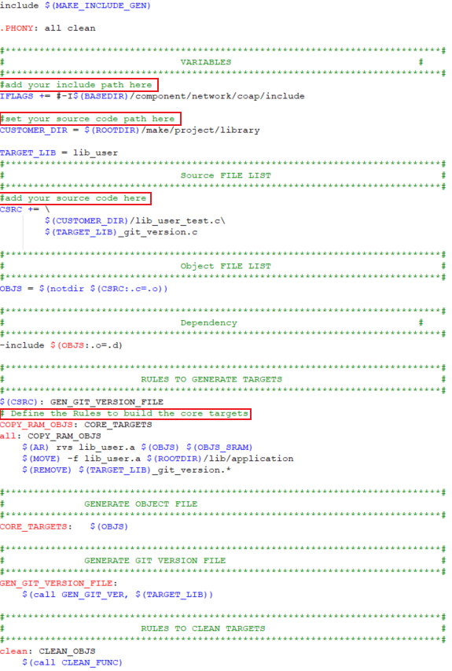

Makefile Architecture
The following figures summary the makefile architectures of each project.
KM4 Makefile
project_km4\Makefile--> project_km4\asdk\Makefile--> project_km4\asdk\make\Makefile--> project_km4\asdk\make\api\Makefile project_km4\asdk\make\application\Makefile project_km4\asdk\make\at_cmd\Makefile project_km4\asdk\make\audio\Makefile project_km4\asdk\make\bluetooth\Makefile project_km4\asdk\make\bootloader\Makefile project_km4\asdk\make\cmsis\Makefile project_km4\asdk\make\cmsis-dsp\Makefile project_km4\asdk\make\example\Makefile project_km4\asdk\make\file_system\Makefile project_km4\asdk\make\flashloader\Makefile project_km4\asdk\make\libnosys\Makefile project_km4\asdk\make\mbedtls\Makefile project_km4\asdk\make\media\Makefile project_km4\asdk\make\network\Makefile project_km4\asdk\make\os\Makefile project_km4\asdk\make\project\Makefile project_km4\asdk\make\project\sram\Makefile: how to build code into RAM project_km4\asdk\make\project\xip\Makefile: how to build code into Flash project_km4\asdk\make\project\library\Makefile: how to build library project_km4\asdk\make\RT_xmodem\Makefile project_km4\asdk\make\rtk_coex\Makefile project_km4\asdk\make\target\Makefile project_km4\asdk\make\ui\Makefile project_km4\asdk\make\usb_otg\Makefile project_km4\asdk\make\utilities\Makefile project_km4\asdk\make\utilities_example\Makefile project_km4\asdk\make\utils\Makefile project_km4\asdk\make\wpan\Makefile project_km4\asdk\make\wps\Makefile
KM0 Makefile
project_km0\Makefile--> project_km0\asdk\Makefile--> project_km0\asdk\make\Makefile--> project_km0\asdk\make\api\Makefile project_km0\asdk\make\at_cmd\Makefile project_km0\asdk\make\bootloader\Makefile project_km0\asdk\make\cmsis\Makefile project_km0\asdk\make\os\Makefile project_km0\asdk\make\project\Makefile project_km0\asdk\make\rtk_coex\Makefile project_km0\asdk\make\target\Makefile project_km0\asdk\make\utils\Makefile
KM4 Makefile
project_km4\Makefile--> project_km4\asdk\Makefile--> project_km4\asdk\make\Makefile--> project_km4\asdk\make\application\Makefile project_km4\vsdk\make\at_cmd\Makefile project_km4\asdk\make\audio\Makefile project_km4\asdk\make\bluetooth\Makefile project_km4\asdk\make\bootloader\Makefile project_km4\asdk\make\cmsis\Makefile project_km4\asdk\make\cmsis-dsp\Makefile project_km4\asdk\make\example\Makefile project_km4\asdk\make\file_system\Makefile project_km4\asdk\make\flashloader\Makefile project_km4\asdk\make\libnosys\Makefile project_km4\asdk\make\mbedtls\Makefile project_km4\asdk\make\media\Makefile project_km4\asdk\make\network\Makefile project_km4\asdk\make\os\Makefile project_km4\asdk\make\project\Makefile project_km4\asdk\make\project\sram\Makefile: how to build code into RAM project_km4\asdk\make\project\xip\Makefile: how to build code into Flash project_km4\asdk\make\project\library\Makefile: how to build library project_km4\asdk\make\RT_xmodem\Makefile project_km4\asdk\make\target\Makefile project_km4\asdk\make\ui\Makefile project_km4\asdk\make\utilities\Makefile project_km4\asdk\make\utilities_example\Makefile project_km4\asdk\make\utils\Makefile project_km4\asdk\make\wpan\Makefile
KR4 Makefile
project_kr4\Makefile--> project_kr4\vsdk\Makefile--> project_kr4\vsdk\make\Makefile--> project_kr4\vsdk\make\applicaiton\Makefile project_kr4\vsdk\make\at_cmd\Makefile project_kr4\vsdk\make\audio\Makefile project_kr4\vsdk\make\bluetooth\Makefile project_kr4\vsdk\make\bootloader\Makefile project_kr4\vsdk\make\cmsis\Makefile project_kr4\vsdk\make\file_system\Makefile project_kr4\vsdk\make\libnosys\Makefile project_kr4\vsdk\make\mbedtls\Makefile project_kr4\vsdk\make\network\Makefile project_kr4\vsdk\make\os\Makefile project_kr4\vsdk\make\project\Makefile project_kr4\vsdk\make\target\Makefile project_kr4\vsdk\make\utilities\Makefile project_kr4\vsdk\make\utilities_example\Makefile project_kr4\vsdk\make\utils\Makefile
CA32 Makefile
project_ap\Makefile--> project_ap\asdk\Makefile--> project_ap\asdk\make\Makefile--> project_ap\asdk\make\application\Makefile project_ap\asdk\make\at_cmd\Makefile project_ap\asdk\make\atf\Makefile project_ap\asdk\make\audio\Makefile project_ap\asdk\make\bluetooth\Makefile project_ap\asdk\make\file_system\Makefile project_ap\asdk\make\fwlib\Makefile project_ap\asdk\make\hal\Makefile project_ap\asdk\make\mbedtls\Makefile project_ap\asdk\make\network\Makefile project_ap\asdk\make\os\Makefile project_ap\asdk\make\project\Makefile project_ap\asdk\make\range\Makefile project_ap\asdk\make\swlib\Makefile project_ap\asdk\make\ui\Makefile project_ap\asdk\make\usb_otg\Makefile project_ap\asdk\make\utilities\Makefile project_ap\asdk\make\utilities_example\Makefile project_ap\asdk\make\utils\Makefile project_ap\asdk\make\wpan\Makefile project_ap\asdk\make\xlat_table\Makefile
KM4 Makefile
project_hp\Makefile--> project_hp\asdk\Makefile--> project_hp\asdk\make\Makefile--> project_hp\asdk\make\application\Makefile project_hp\asdk\make\at_cmd\Makefile project_hp\asdk\make\audio\Makefile project_hp\asdk\make\bluetooth\Makefile project_hp\asdk\make\bootloader\Makefile project_hp\asdk\make\cmsis\Makefile project_hp\asdk\make\cmsis-dsp\Makefile project_hp\asdk\make\example\Makefile project_hp\asdk\make\file_system\Makefile project_hp\asdk\make\flashloader\Makefile project_hp\asdk\make\mbedtls\Makefile project_hp\asdk\make\media\Makefile project_hp\asdk\make\network\Makefile project_hp\asdk\make\os\Makefile project_hp\asdk\make\project\Makefile project_hp\asdk\make\project\sram\Makefile: how to build code into RAM project_hp\asdk\make\project\xip\Makefile: how to build code into Flash project_hp\asdk\make\project\library\Makefile: how to build library project_hp\asdk\make\RT_xmodem\Makefile project_hp\asdk\make\target\Makefile project_hp\asdk\make\ui\Makefile project_hp\asdk\make\usb_otg\Makefile project_hp\asdk\make\utilities\Makefile project_hp\asdk\make\utilities_example\Makefile project_hp\asdk\make\utils\Makefile
KM0 Makefile
project_lp\Makefile--> project_lp\asdk\Makefile--> project_lp\asdk\make\Makefile--> project_lp\asdk\make\applicaiton\Makefile project_lp\asdk\make\bootloader\Makefile project_lp\asdk\make\cmsis\Makefile project_lp\asdk\make\monitor\Makefile project_lp\asdk\make\os\Makefile project_lp\asdk\make\project\Makefile project_lp\asdk\make\target\Makefile project_lp\asdk\make\utils\Makefile
How to Build Library
The Makefile in {SDK}\amebadplus_gcc_project\project_km4\asdk\make\project\library is an example to show how to build user library. As shown below, lib_user.a will be generated in {SDK}\amebadplus_gcc_project\project_km4\asdk\lib\application.
The makefile in {SDK}\amebalite_gcc_project\project_km4\asdk\make\project\library is an example to show how to build user library. As shown below, lib_user.a will be generated in {SDK}\amebalite_gcc_project\project_km4\asdk\lib\application.
The Makefile in path {SDK}\amebasmart_gcc_project\project_hp\asdk\make\project\library is an example to show how to build user library. As shown below, lib_user.a will be generated in {SDK}\amebasmart_gcc_project\project_hp\asdk\lib\application.
{kind=link}

How to Add Library
Open the file {SDK}\amebadplus_gcc_project\project_km4\asdk\Makefile, and append lib_user.a to LINK_APP_LIB.
Open the file {SDK}\amebalite_gcc_project\project_km4\asdk\Makefile, and append lib_user.a into LINK_APP_LIB.
Open the file {SDK}\amebasmart_gcc_project\project_hp\asdk\Makefile, and append lib_user.a into LINK_APP_LIB.
LINK_APP_LIB += $(ROOTDIR)/lib/application/lib_user.a